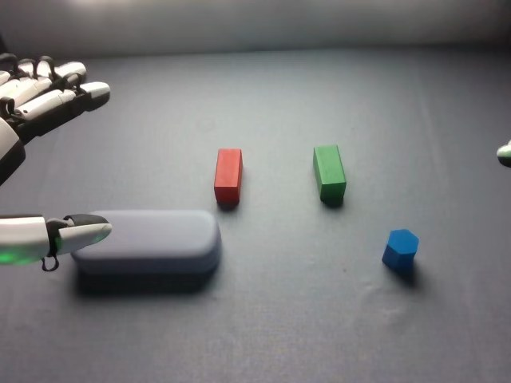

RoboCOIN · Airbot MMK2 · stack_block/episode_000005
Episode 000005

Annotation
From the dedicated visual review of this video (humanoid_action_v1). Plain text · JSON
Observed outcome
- Status
success_visible
- Description
The glasses case is bridged across the tops of the red and green blocks and stays there after the left hand withdraws. The blue block stands upright on the case's top surface near its right end after the right hand opens (frames 336-346) and remains standing through the right hand's withdrawal and the final head-camera tilt (frames 368-391). No drop, topple or collapse is visible. The slow right-hand grasp (166-265) did not move the block on the table until the lift at about 267.
Hand roles
- Left
Robot's left hand (image-left): the only hand active in frames 0-142. Its palm and fingers cover the case's top and rear edge, the green-lit thumb sits at the case's near end; it closes on the case, lifts it, carries it up and right, lowers it across the tops of the red and green blocks (about frames 72-76), keeps pressing and holding it until about frame 128, then releases and withdraws to image-left. It stays open and idle for the rest of the clip and does not stabilize the stack during the right-hand placement.
- Right
Robot's right hand (image-right): static and mostly out of view until about frame 140. From 143 it approaches the blue block, closes fingers over it and thumb against its near side (frames 166-265, slow with re-seating), lifts it (about 267), carries it left over the right end of the case, lowers it onto the case top (about 300-310), re-seats it upright (312-334), opens (336-346) and withdraws out of frame (368-391).
Coordination
Strictly sequential, no simultaneous manipulation and no hand-to-hand transfer: the left hand finishes the case placement and withdraws (about frames 129-165) before the right hand lifts the block (about 267); the left hand then stays idle at the left. The left hand's placement forms the support (case across red and green blocks) onto which the right hand places the blue block. The right hand begins to enter the view while the left hand is still releasing (frames 140-142), but they do not touch each other or a common object.
Robot-side evidence
- Conclusion
The hand at image-left is the robot's left hand and the hand entering from image-right is the robot's right hand. Image left matches robot left in the head view.
- Evidence
- Telemetry (observation.state, joint names left_arm_joint_1-6, right_arm_joint_1-6, left_hand_joint_1-12, right_hand_joint_1-12): the left arm and left hand joints change in frames 0-128 (summed absolute change per 16 frames up to about 1.1 rad for the left arm and 3.3 rad for the left hand) while the right arm stays below about 0.1 rad until about frame 128; the right arm and right hand then move from about 128 to 352 and the left hand stays nearly still (left arm below about 0.1 rad per 16 frames from 160 to 350).
- cam_left_wrist_rgb at frame 60 shows the hand with the case held beneath and above, bright and washed out, consistent with the head-view left hand carrying the case; cam_right_wrist_rgb at frame 280 shows the blue block between the thumb and fingers, matching the head-view right hand.
- cam_front_rgb (far-side view facing the robot) at frame 100 shows the case on the two blocks held by the hand that appears at image-right in that mirrored view, consistent with the head-view image-left hand being the robot's left; the other hand rests open at image-left in that view.
- Publisher instruction assigns the first task to the left hand and the second to the right hand, matching the visible order. The instruction was not used as the sole evidence.
- Confidence
high
Chronology
| Frames | Observation |
|---|---|
| 0–23 | Initial state: glasses case (grey-blue rounded box) lies on the table at image-left; the red block and green block stand upright and separated (red left, green right) in the middle back; the blue pentagonal-prism block stands at image-right front. The robot's left hand is at the image-left edge with its thumb (green-lit) lying beside the case's left end and its fingers extended above and behind the case. The right hand is visible only as a small fingertip sliver at the right edge (already present in the initial PNG). The left hand lifts and shifts toward the case, opening wider. |
| 24–47 | Left hand lowers its palm over the case's rear/top with fingers curling over the far edge and the thumb tip dropping to the case's near-left end (frames 30-40); the hand settles on the case and closes (frames 36-47). The right hand stays static at the right edge. |
| 48–70 | Left hand lifts the case off the table (case raised and motion-blurred by frames 52-56) and carries it up and rightwards toward the red and green blocks, with the forearm and cable entering view; the case is held above the red block and swung toward the green block. |
| 71–96 | The case is lowered and comes to rest across the tops of the red block (image-left end) and the green block (image-right end) by about frames 72-76. The left hand's thumb still presses beside the case near the red block and the palm covers its top. |
| 97–128 | Left hand keeps the case pressed on the two blocks, with small adjustments, and gradually loosens; the case remains bridged across the red and green blocks. Right hand still static at the right edge. |
| 129–142 | Left hand releases: the hand rises and the thumb slides out from beside the case toward image-left (frames 130-142) while the case stays in place on the blocks. The right hand and arm begin to enter from the right edge (frames 140-142). |
| 143–165 | Left hand withdraws to a resting pose at the image-left edge, open and idle for the rest of the clip. The right hand moves in from image-right, fingers extended and thumb below, and positions around the blue block. |
| 166–265 | Right hand slowly closes around the blue block on the table: fingers come over the block's far/top side and the thumb (green-lit, below) closes against its near-right side; frames 170-262 show repeated small closing and re-seating adjustments of the finger and thumb around the block at the table position, while the block does not leave the table. This is a long grasp refinement, not a visible failed grasp or drop. |
| 266–290 | Right hand lifts the pinched blue block off the table (block clearly raised at frames 268-272) and carries it up and left, passing at the right end of the case and rising above its top surface (frames 276-290). |
| 291–335 | Right hand lowers the blue block onto the case's top surface at the right end (contact about frames 300-310), holding it between thumb and fingers; thumb and fingers re-seat the block and set it upright (frames 312-334) with the thumb tip below and beside the block. |
| 336–366 | Right hand opens and lets go (frames 336-346): the blue block stands upright on the case's right end, the fingers lift away and the thumb slides out to the right; the block stays standing. |
| 367–391 | Right hand withdraws up and to the right and moves out of the frame (frames 368-391). Towards the end the head camera tilts upward/shifts (frames 380-391) so the scene appears slightly lower. Final state: case bridged across the red and green blocks with the blue block upright on top of the case near its right end; left hand idle open at the image-left edge. |
Clip selection
Complete single-task clip retained: the left hand places the glasses case across the red and green blocks, then the right hand places the blue block on the case. The long slow right-hand grasp (about frames 166-266) is an ordinary phase of the same placement, so the full video is kept without cropping or a first_substep.
Differences from the publisher annotation
- The publisher instruction says 'square building blocks in the center' placed by the left hand; visibly the left hand places a rounded grey-blue glasses case (not a building block) across a red block and a green block that are cuboid, separated and stay in their original positions.
- The instruction says 'cylindrical building blocks' on top by the right hand; the visible block is a blue pentagonal prism, placed upright near the right end of the case, not at the center.
- Subtask labels call the end effectors 'grippers', but the robot has five-finger dexterous hands.
- Subtask timeline: Grasp case 0-44, place case 45-128, grasp blue block 129-263, place blue block 264-366, End 367-391. Visually, the left hand closes on the case about frames 36-47 and lifts from about 48, so the case grasp label ends roughly at the lift; the case is on the blocks by about 72-76 and the hand holds it until about 128, matching the place label end. The 'grasp blue block' label (129-263) begins while the left hand is still releasing and the right hand has not yet entered (about 140), and the right hand's actual closing on the block runs about 166-265, so the label matches that slow grasp. The 'place' label (264-366) starts at the lift (about 267), and the block is released at about 336-346; the 'End' label starts after the right hand has opened and begins to withdraw.
- The scene annotation places the glasses case 'front-left' and the red and green blocks 'back-left' and 'back-right', consistent with the image; the red and green blocks are about 120 px apart at 640x480, so the case spans a visible gap between them rather than two adjacent blocks as in the earlier episode_000001 setup.
Uncertainties
- Exact finger contact points on the case are partly occluded in the head view; the visible configuration is palm over the case's top and rear, thumb near its end, but whether the fingers wrap under the far edge is not visible. The prompt says 'closes its thumb and fingers around' the case in a general way.
- During frames 166-265 the right hand is partly occluded by its own palm; the closing pattern (fingers over, thumb against near side) is inferred from the visible thumb and fingertips and the final lift, not from a clear single contact frame.
- The exact release moment of the left hand (129-142) is blurred by motion and the case sits in the shadow of the hand; the case clearly stays on the blocks.
- The blue block's final position at the extreme right end of the case top may be slightly overhanging the case edge in the oblique view; it appears to stand stably through frame 391.
- The head camera tilts upward in the last ~10 frames (380-391), changing the apparent scene position; this is camera motion, not scene change.
Complete review record action_review.json
{
"prompt_protocol": "humanoid_action_v1",
"prompt_protocol_note": "RoboCOIN Airbot MMK2 is a dual-arm robot with five-finger dexterous hands, not a Humanoid Everyday or NVIDIA GR1 dataset. humanoid_action_v1 is applied by analogy: robot-relative left/right hand, separate per-hand roles, coordination order, per-hand contact changes and the actual end state, with the shared constraint sentence appended verbatim.",
"prompt_provenance": "visually_authored_from_video_and_initial_frame",
"dataset": "RoboCOIN/Airbot_MMK2_stack_block",
"task": "stack_block",
"episode_id": "episode_000005",
"generation_camera": "cam_head_rgb (robot first-person head camera)",
"source_video": "../../original/videos/chunk-000/observation.images.cam_head_rgb/episode_000005.mp4",
"generation_video": "../video.mp4",
"conditioning_first_frame": "../first_frame.png",
"action_prompt": "../actiongeneration_prompt.txt",
"source_frame_count": 392,
"fps": 30,
"resolution": [
640,
480
],
"selected_source_frame_start": 0,
"selected_source_frame_end_exclusive": 392,
"selection_reason": "Complete single-task clip retained: the left hand places the glasses case across the red and green blocks, then the right hand places the blue block on the case. The long slow right-hand grasp (about frames 166-266) is an ordinary phase of the same placement, so the full video is kept without cropping or a first_substep.",
"usable_prompt": "The robot's left hand closes its thumb and fingers around the glasses case, lifts it, and sets it across the tops of the red and green blocks, holding it in place before releasing and drawing back to the left. The robot's right hand then pinches the blue block between thumb and fingers, lifts it, carries it over, sets it upright on the case's right end, and opens and withdraws, leaving the three-level stack standing. Keep the camera fixed; preserve robot geometry, physically valid joint motion, and normal gripper opening and closing.",
"chronology": [
{
"frames": [
0,
23
],
"observation": "Initial state: glasses case (grey-blue rounded box) lies on the table at image-left; the red block and green block stand upright and separated (red left, green right) in the middle back; the blue pentagonal-prism block stands at image-right front. The robot's left hand is at the image-left edge with its thumb (green-lit) lying beside the case's left end and its fingers extended above and behind the case. The right hand is visible only as a small fingertip sliver at the right edge (already present in the initial PNG). The left hand lifts and shifts toward the case, opening wider."
},
{
"frames": [
24,
47
],
"observation": "Left hand lowers its palm over the case's rear/top with fingers curling over the far edge and the thumb tip dropping to the case's near-left end (frames 30-40); the hand settles on the case and closes (frames 36-47). The right hand stays static at the right edge."
},
{
"frames": [
48,
70
],
"observation": "Left hand lifts the case off the table (case raised and motion-blurred by frames 52-56) and carries it up and rightwards toward the red and green blocks, with the forearm and cable entering view; the case is held above the red block and swung toward the green block."
},
{
"frames": [
71,
96
],
"observation": "The case is lowered and comes to rest across the tops of the red block (image-left end) and the green block (image-right end) by about frames 72-76. The left hand's thumb still presses beside the case near the red block and the palm covers its top."
},
{
"frames": [
97,
128
],
"observation": "Left hand keeps the case pressed on the two blocks, with small adjustments, and gradually loosens; the case remains bridged across the red and green blocks. Right hand still static at the right edge."
},
{
"frames": [
129,
142
],
"observation": "Left hand releases: the hand rises and the thumb slides out from beside the case toward image-left (frames 130-142) while the case stays in place on the blocks. The right hand and arm begin to enter from the right edge (frames 140-142)."
},
{
"frames": [
143,
165
],
"observation": "Left hand withdraws to a resting pose at the image-left edge, open and idle for the rest of the clip. The right hand moves in from image-right, fingers extended and thumb below, and positions around the blue block."
},
{
"frames": [
166,
265
],
"observation": "Right hand slowly closes around the blue block on the table: fingers come over the block's far/top side and the thumb (green-lit, below) closes against its near-right side; frames 170-262 show repeated small closing and re-seating adjustments of the finger and thumb around the block at the table position, while the block does not leave the table. This is a long grasp refinement, not a visible failed grasp or drop."
},
{
"frames": [
266,
290
],
"observation": "Right hand lifts the pinched blue block off the table (block clearly raised at frames 268-272) and carries it up and left, passing at the right end of the case and rising above its top surface (frames 276-290)."
},
{
"frames": [
291,
335
],
"observation": "Right hand lowers the blue block onto the case's top surface at the right end (contact about frames 300-310), holding it between thumb and fingers; thumb and fingers re-seat the block and set it upright (frames 312-334) with the thumb tip below and beside the block."
},
{
"frames": [
336,
366
],
"observation": "Right hand opens and lets go (frames 336-346): the blue block stands upright on the case's right end, the fingers lift away and the thumb slides out to the right; the block stays standing."
},
{
"frames": [
367,
391
],
"observation": "Right hand withdraws up and to the right and moves out of the frame (frames 368-391). Towards the end the head camera tilts upward/shifts (frames 380-391) so the scene appears slightly lower. Final state: case bridged across the red and green blocks with the blue block upright on top of the case near its right end; left hand idle open at the image-left edge."
}
],
"anatomical_side_evidence": {
"conclusion": "The hand at image-left is the robot's left hand and the hand entering from image-right is the robot's right hand. Image left matches robot left in the head view.",
"evidence": [
"Telemetry (observation.state, joint names left_arm_joint_1-6, right_arm_joint_1-6, left_hand_joint_1-12, right_hand_joint_1-12): the left arm and left hand joints change in frames 0-128 (summed absolute change per 16 frames up to about 1.1 rad for the left arm and 3.3 rad for the left hand) while the right arm stays below about 0.1 rad until about frame 128; the right arm and right hand then move from about 128 to 352 and the left hand stays nearly still (left arm below about 0.1 rad per 16 frames from 160 to 350).",
"cam_left_wrist_rgb at frame 60 shows the hand with the case held beneath and above, bright and washed out, consistent with the head-view left hand carrying the case; cam_right_wrist_rgb at frame 280 shows the blue block between the thumb and fingers, matching the head-view right hand.",
"cam_front_rgb (far-side view facing the robot) at frame 100 shows the case on the two blocks held by the hand that appears at image-right in that mirrored view, consistent with the head-view image-left hand being the robot's left; the other hand rests open at image-left in that view.",
"Publisher instruction assigns the first task to the left hand and the second to the right hand, matching the visible order. The instruction was not used as the sole evidence."
],
"confidence": "high"
},
"arm_roles": {
"left": "Robot's left hand (image-left): the only hand active in frames 0-142. Its palm and fingers cover the case's top and rear edge, the green-lit thumb sits at the case's near end; it closes on the case, lifts it, carries it up and right, lowers it across the tops of the red and green blocks (about frames 72-76), keeps pressing and holding it until about frame 128, then releases and withdraws to image-left. It stays open and idle for the rest of the clip and does not stabilize the stack during the right-hand placement.",
"right": "Robot's right hand (image-right): static and mostly out of view until about frame 140. From 143 it approaches the blue block, closes fingers over it and thumb against its near side (frames 166-265, slow with re-seating), lifts it (about 267), carries it left over the right end of the case, lowers it onto the case top (about 300-310), re-seats it upright (312-334), opens (336-346) and withdraws out of frame (368-391)."
},
"coordination": "Strictly sequential, no simultaneous manipulation and no hand-to-hand transfer: the left hand finishes the case placement and withdraws (about frames 129-165) before the right hand lifts the block (about 267); the left hand then stays idle at the left. The left hand's placement forms the support (case across red and green blocks) onto which the right hand places the blue block. The right hand begins to enter the view while the left hand is still releasing (frames 140-142), but they do not touch each other or a common object.",
"observed_outcome": {
"status": "success_visible",
"description": "The glasses case is bridged across the tops of the red and green blocks and stays there after the left hand withdraws. The blue block stands upright on the case's top surface near its right end after the right hand opens (frames 336-346) and remains standing through the right hand's withdrawal and the final head-camera tilt (frames 368-391). No drop, topple or collapse is visible. The slow right-hand grasp (166-265) did not move the block on the table until the lift at about 267."
},
"source_annotation": {
"publisher_instruction": "place the square building blocks in the center with left hand and put the cylindrical building blocks on top with right hand.",
"subtask_timeline": [
{
"start_frame": 0,
"end_frame_inclusive": 44,
"indices": [
13,
19,
19,
19,
19
],
"subtasks": [
"Grasp the glasses case with the left gripper",
"null",
"null",
"null",
"null"
]
},
{
"start_frame": 45,
"end_frame_inclusive": 128,
"indices": [
10,
19,
19,
19,
19
],
"subtasks": [
"Place the glasses case on the red and green build blocks with the left gripper",
"null",
"null",
"null",
"null"
]
},
{
"start_frame": 129,
"end_frame_inclusive": 263,
"indices": [
4,
19,
19,
19,
19
],
"subtasks": [
"Grasp the blue diamond shaped build blocks with the right gripper",
"null",
"null",
"null",
"null"
]
},
{
"start_frame": 264,
"end_frame_inclusive": 366,
"indices": [
6,
19,
19,
19,
19
],
"subtasks": [
"Place the blue diamond shaped build blocks on the glasses case with the right gripper",
"null",
"null",
"null",
"null"
]
},
{
"start_frame": 367,
"end_frame_inclusive": 391,
"indices": [
15,
19,
19,
19,
19
],
"subtasks": [
"End",
"null",
"null",
"null",
"null"
]
}
],
"scene_annotation": "The green block is in the back-right, The red block is in the back-left, The blue block is in the front-right, The purple block (glasses case) is in the front-left",
"use": "Used only as an annotation starting point; chronology comes from the decoded frames."
},
"source_annotation_discrepancies": [
"The publisher instruction says 'square building blocks in the center' placed by the left hand; visibly the left hand places a rounded grey-blue glasses case (not a building block) across a red block and a green block that are cuboid, separated and stay in their original positions.",
"The instruction says 'cylindrical building blocks' on top by the right hand; the visible block is a blue pentagonal prism, placed upright near the right end of the case, not at the center.",
"Subtask labels call the end effectors 'grippers', but the robot has five-finger dexterous hands.",
"Subtask timeline: Grasp case 0-44, place case 45-128, grasp blue block 129-263, place blue block 264-366, End 367-391. Visually, the left hand closes on the case about frames 36-47 and lifts from about 48, so the case grasp label ends roughly at the lift; the case is on the blocks by about 72-76 and the hand holds it until about 128, matching the place label end. The 'grasp blue block' label (129-263) begins while the left hand is still releasing and the right hand has not yet entered (about 140), and the right hand's actual closing on the block runs about 166-265, so the label matches that slow grasp. The 'place' label (264-366) starts at the lift (about 267), and the block is released at about 336-346; the 'End' label starts after the right hand has opened and begins to withdraw.",
"The scene annotation places the glasses case 'front-left' and the red and green blocks 'back-left' and 'back-right', consistent with the image; the red and green blocks are about 120 px apart at 640x480, so the case spans a visible gap between them rather than two adjacent blocks as in the earlier episode_000001 setup."
],
"uncertainties": [
"Exact finger contact points on the case are partly occluded in the head view; the visible configuration is palm over the case's top and rear, thumb near its end, but whether the fingers wrap under the far edge is not visible. The prompt says 'closes its thumb and fingers around' the case in a general way.",
"During frames 166-265 the right hand is partly occluded by its own palm; the closing pattern (fingers over, thumb against near side) is inferred from the visible thumb and fingertips and the final lift, not from a clear single contact frame.",
"The exact release moment of the left hand (129-142) is blurred by motion and the case sits in the shadow of the hand; the case clearly stays on the blocks.",
"The blue block's final position at the extreme right end of the case top may be slightly overhanging the case edge in the oblique view; it appears to stand stably through frame 391.",
"The head camera tilts upward in the last ~10 frames (380-391), changing the apparent scene position; this is camera motion, not scene change."
],
"inspection_coverage": {
"frames_decoded": 392,
"frames_sampled_in_contact_sheets": 196,
"stride": 2,
"contact_sheet_frame_indices": "0,2,...,390 (even indices), 12 per sheet at 400x300, labelled by frame index",
"native_resolution_frames_inspected": [
0,
30,
40,
50,
60,
72,
100,
128,
134,
142,
150,
166,
190,
240,
264,
272,
290,
310,
340,
366,
372,
380,
391
],
"initial_png_inspected": true,
"initial_png_inspected_note": "generation input/first_frame.png viewed at native 640x480 after the full sequence was understood; it matches decoded frame 0.",
"other_cameras_and_telemetry": "Single frames at index 60 (cam_left_wrist_rgb), 280 (cam_right_wrist_rgb) and 100 (cam_front_rgb); observation.state Parquet joint-group absolute-change sums over 16-frame windows for left arm, right arm, left hand and right hand over all 392 frames.",
"temporary_files": "Contact sheets and frames were written only to a temporary directory outside the repository and deleted afterwards."
},
"evidence_frame_indices": [
0,
30,
40,
50,
60,
72,
100,
128,
134,
142,
150,
166,
190,
240,
264,
272,
290,
310,
340,
366,
372,
380,
391
],
"review_completed_at": "2026-10-15T20:36:33Z",
"dedicated_review_agent": "review_robocoin_episode_000005"
}